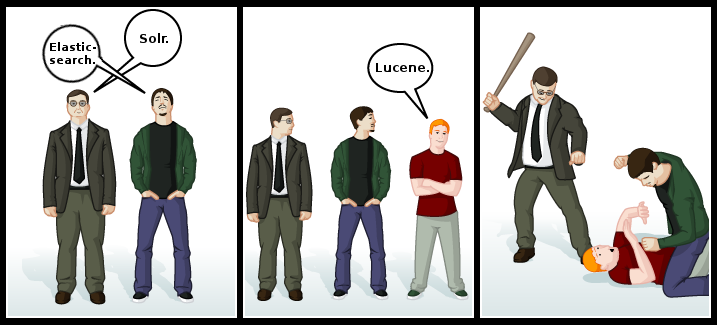

Lucene 101
So what's this "Lucene"?
Apache Lucene is a free open source information retrieval software library, originally written in Java (...).
At the core of Lucene's logical architecture is the idea of a document containing fields of text. This flexibility allows Lucene's API to be independent of the file format.
Lucene vs Solr vs Elasticsearch (?)
History
- 1999 - Lucene created
- 2001 - Lucene joined ASF (Jakarta)
- 2004 - Solr created; Compass created
- 2005 - Lucene bacame top-level Apache project
- 2010 - Lucene + Solr merged; first versions of ES released
- 2012 - Solr 4.0.0 with SolrCloud
When to use Lucene?
- You are a search engineer AND
- You are a programmer AND
- You want full control over almost all the internals of Lucene AND
- Your requirements demand you to do all sorts of geeky customization to Lucene AND
- You are willing to take care of infrastructure elements of your search like scaling, distribution, etc.
When to use Solr?
- At least one of the above didn't make sense. OR
- You want something that is ready to use out-of-the-box (even without knowledge of Java) OR
- Your infrastructure requirements outweigh search customization requirements.
Glossary
- Document
- Basic object in Lucene, conceptually a set of fields stored in index
- Field
- Stores a piece of information (content)
- Index
- Database which stores documents and fields in Lucene-specific format (extras: index reader / writer, segments, inverted index, term vectors)
- Indexed field
- A field which is applicable for searching
- Stored field
- A field which original content is sored as-is in index
Glossary - cont.
- Query / search query
-
Used for retrieving matching documents from index, ex.:
'book_title:Tadeusz^2 AND text:ojczyzna''+book_title:Tadeusz^2 +text:ojczyzna'
Extras:TermQuery titleQuery = new TermQuery(new Term("book_title", "Tadeusz")); titleQuery.setBoost(2); TermQuery textQuery = new TermQuery(new Term("text", "ojczyzna")); BooleanQuery booleanQuery = new BooleanQuery(); booleanQuery.add(titleQuery, BooleanClause.Occur.MUST); booleanQuery.add(textQuery, BooleanClause.Occur.MUST);IndexSearcher.search, collectors,Weight
Glossary - cont.
- Similarity
- Determines scores for documents matched by query (extras: scoring formula)
- Scoring / Score
- A set of parameters / formulas which produce a way to determine how "accurate" is a match of a document (per query)
- Boost
- A way of changing scrore of a field (it's applied to a computed score)
Implementation overview
Examples
- Demo
- Comparison with our spikes - Eclipse
Summary
- When you need scalable text search engine, which you can use out-of-the box - don't use Lucene